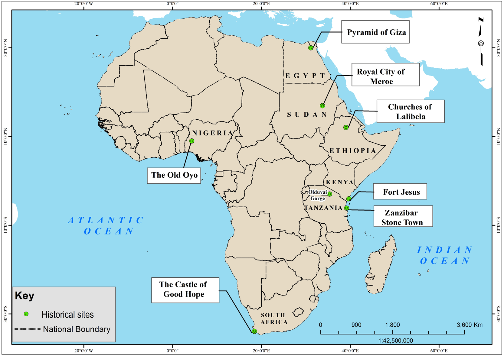

observed. Famous historical sites in Africa include Olduvai Gorge in Tanzania, the Pyramids of Giza in Egypt, the Castle of Good Hope in South Africa, the Royal City of Meroe in Sudan, Churches of Lalibela in Ethiopia, Zanzibar Stone Town, Fort Jesus in Mombasa-Kenya and the Old Oyo in Nigeria. Figure 1.5 shows some of these historical sites in Africa.

Figure 1.5: Some historical sites in Africa
Functions of historical sites
Historical sites provide information on past human activities. They also provide proof of the level of knowledge and skills of people in the past. Such knowledge and skills include rock paintings, architecture, ironwork, irrigation systems, hunting tools and food gathering routes. In addition, historical sites act as places of entertainment for interested people. Furthermore, they are used as sources of income through tourism.
Advantages of historical sites
Historical sites preserve evidence of ancient history as they contain different types of ancient information. For example, they show styles of buildings, utensils, working tools and settlement patterns. Some of the old buildings retain their original functions up to now.